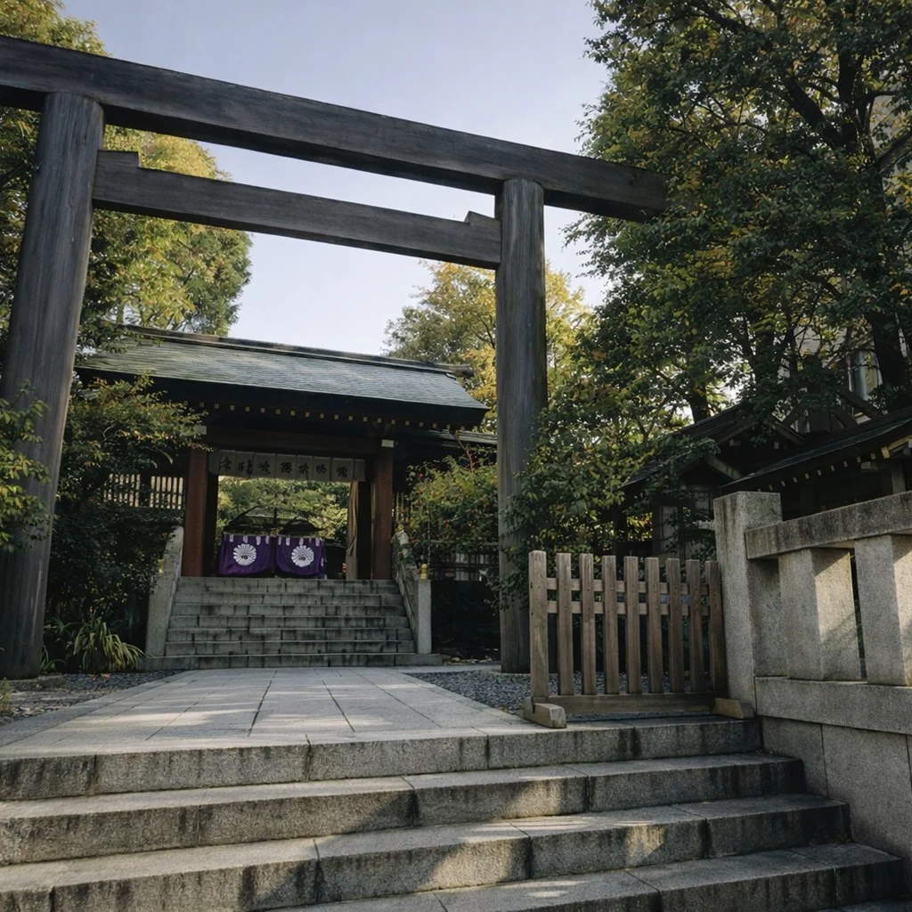
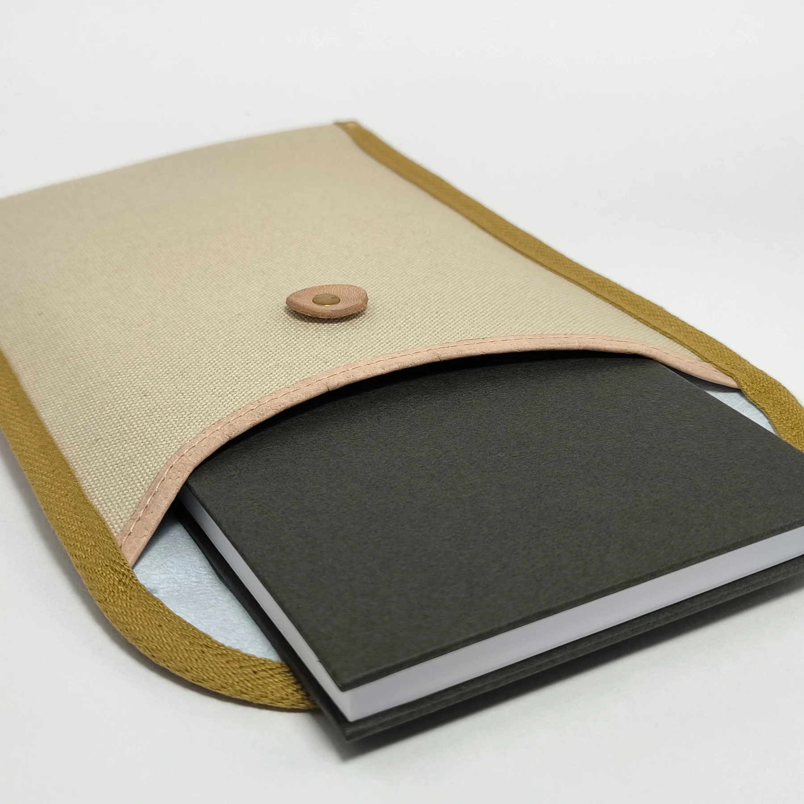
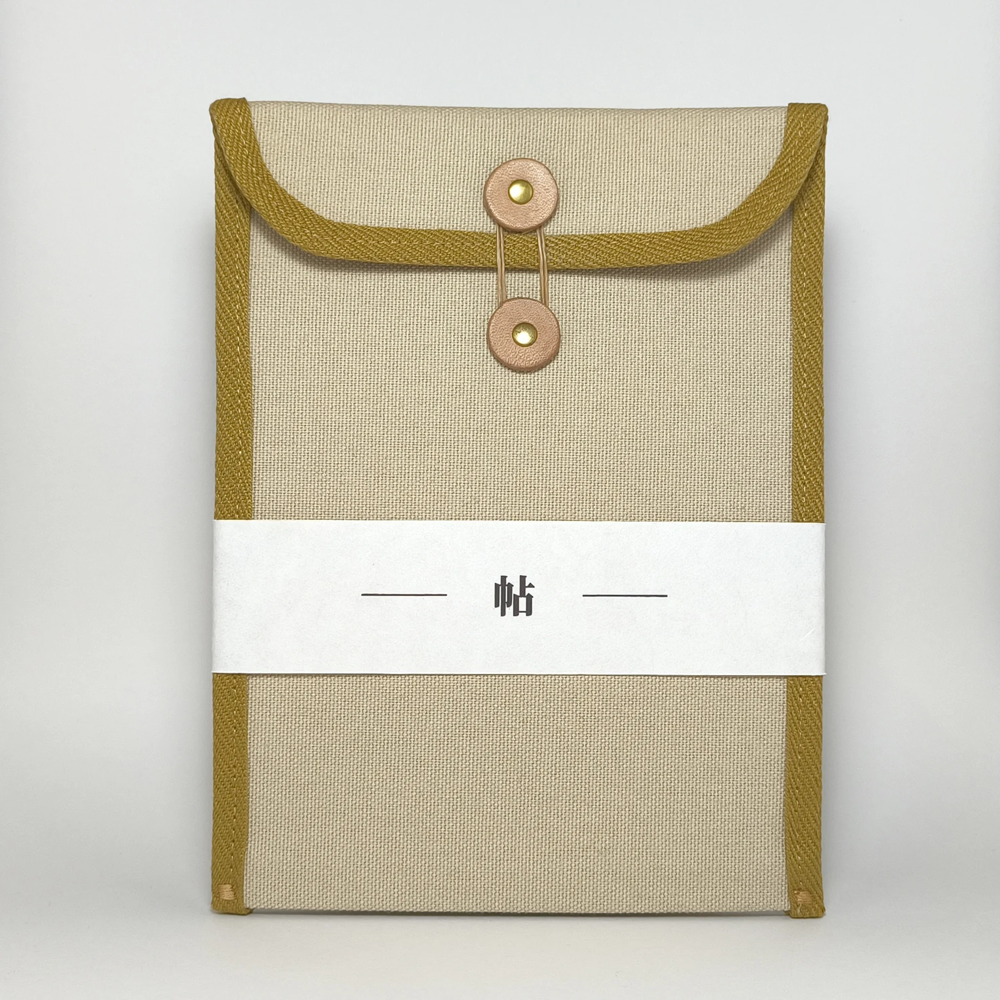
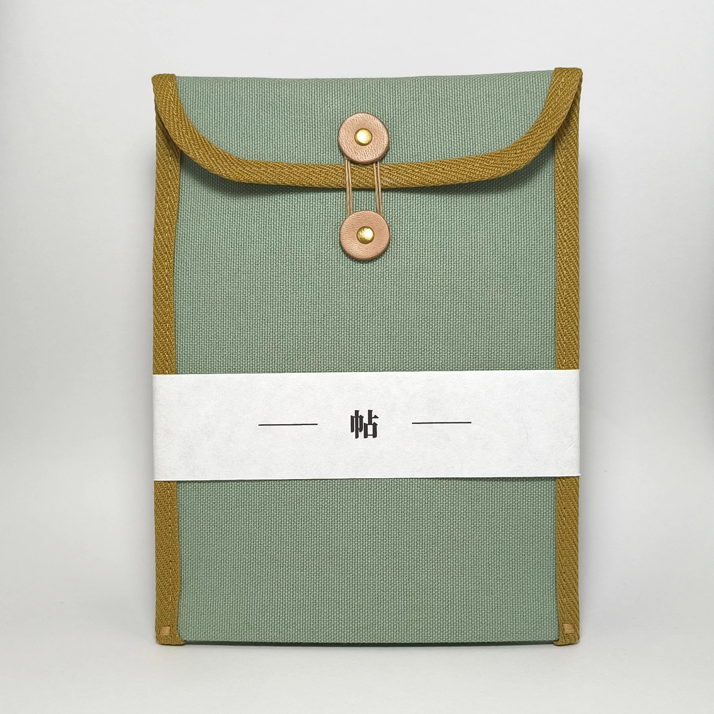
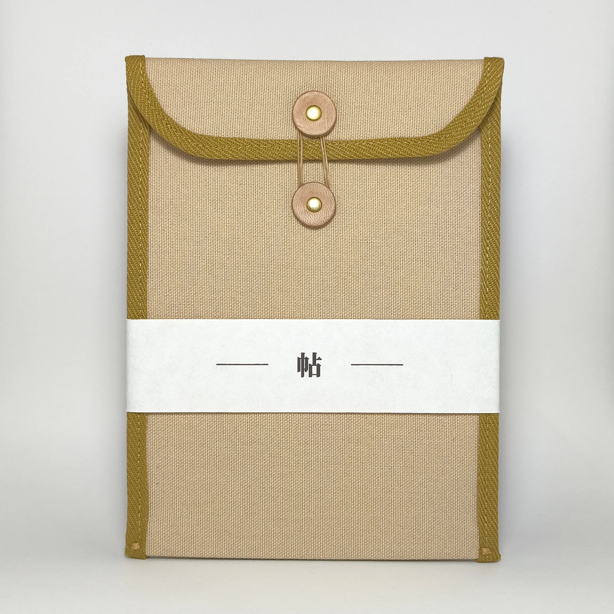
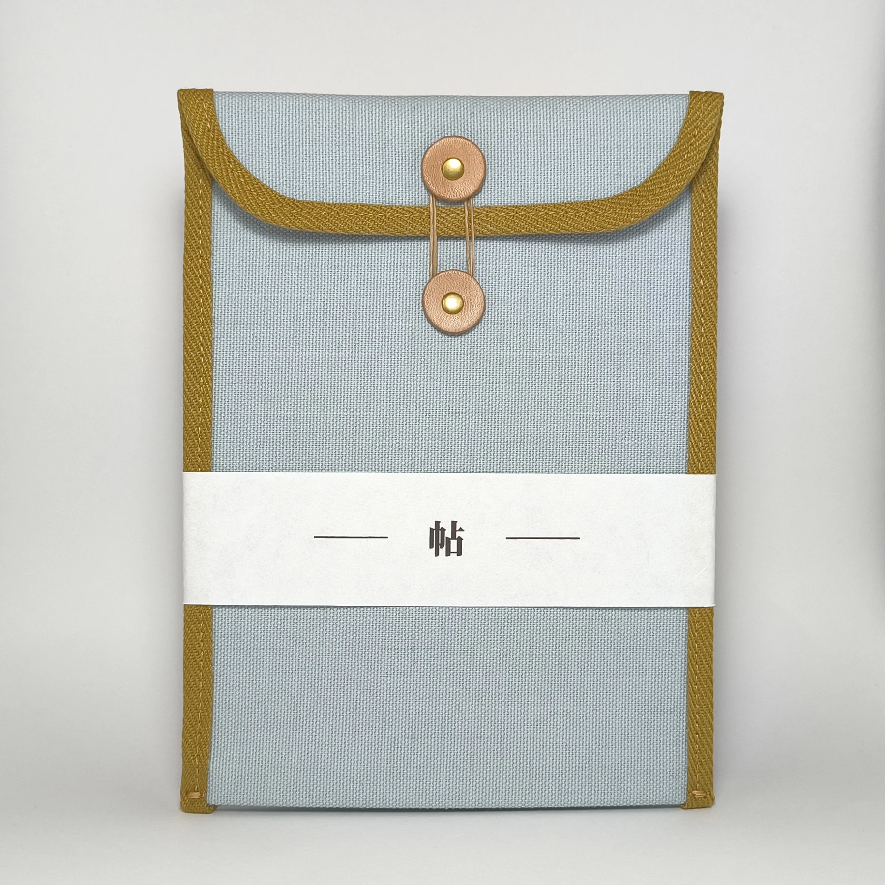
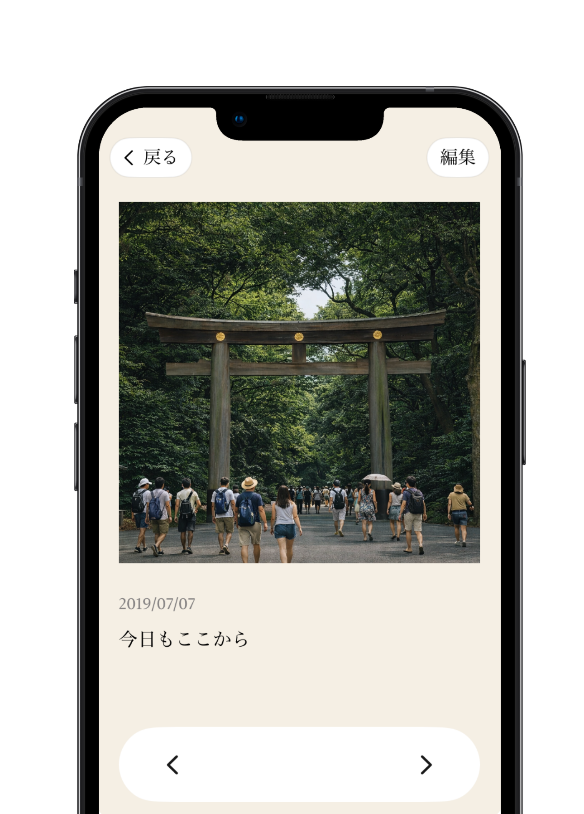
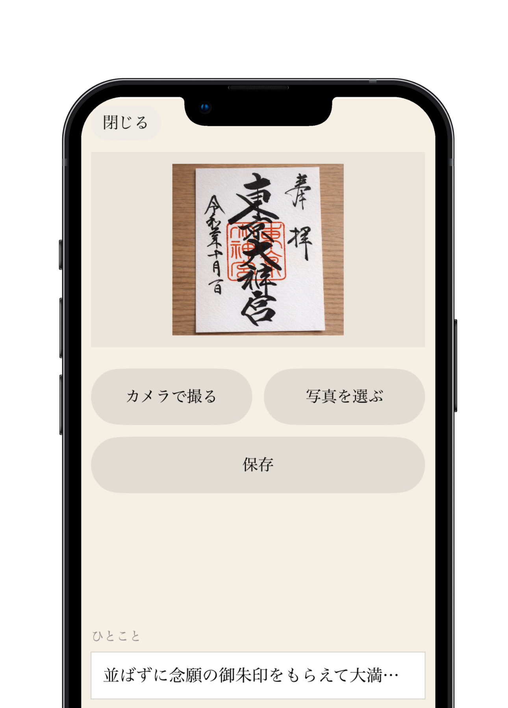
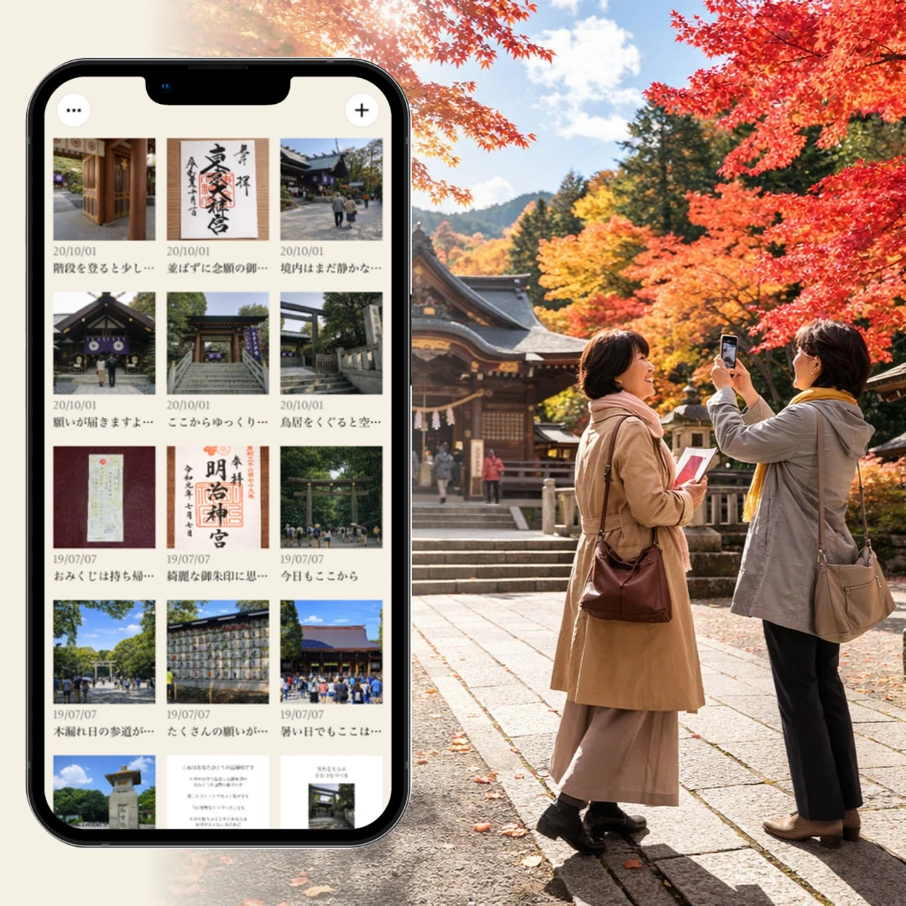

御朱印帳のある休日
御朱印帳を持って、
ちょっとお出かけ。
御朱印のいただき方や御朱印帳の使い方から、お参りの行き帰りの楽しみまで。
自分のペースで、ひとつずつ楽しんでみませんか。
01はじめの一冊
御朱印帳を買ったら、最初にどこへ行く？
最初の一歩は、身近な神社やお寺から。
御朱印についての参考資料
宮城県神社庁「御朱印マナー」「参拝の作法」
愛知県神社庁「神社ってなんだろう」
神社本庁 公式サイト
有名な場所をいくつも巡らなくても大丈夫。散歩の途中で見かけたお寺や、前から気になっていた神社へ。まずは静かに手を合わせる時間を大切に。
使い方をご存じの方は、休日の寄り道へ
はじめての御朱印のいただき方
神社なら鳥居の前で一礼し、手水が使えるときは手を清めます。一般に二拝二拍手一拝ですが、お寺の作法や各寺社の案内を優先しましょう。
- まずはお参りをする
御朱印は神社やお寺にお参りした証としていただくもの。最初に参拝を済ませましょう。 - 受付の案内を確認する
神社なら授与所や社務所、お寺なら納経所など。受付時間や直書き・書き置きの対応は場所によって違います。 - 御朱印帳を開いて渡す
直接書いていただける場合は、希望のページを開いて丁寧に渡します。書いていただく間は静かに待ちましょう。
初穂料・納経料や受付方法は訪問先によって異なるので、事前に公式案内を確認し、現地の案内を優先してください。
御朱印帳は、どう使うの？
蛇腹式のものが多い御朱印帳。どのページを開けばよいか迷ったら、受付の方に聞いて大丈夫です。
御朱印帳の最初のページは？
最初のページを空けておく決まりはありません。 表紙を開いた最初の白いページから使えます。思い入れのある神社やお寺のために空けておくのも、自分の楽しみ方のひとつです。
書き置きの御朱印をいただいたら
あらかじめ紙に書かれた「書き置き」の御朱印をいただくこともあります。
小型のクリアファイルが一枚あると便利です。 御朱印のサイズに合うものなら、折れや汚れを防いで持ち帰れます。あとから御朱印帳に貼っても、ファイルに残しても。
御朱印をいただいたら、帰り道も楽しみのひとつ。
御朱印の使い方をあとで見返したいときは、LINEからこのページを開けます（友だち追加）。
02休日の寄り道
今週末、御朱印帳を持って出かけるなら
御朱印帳を持って出かける日。お参りの前後にも、好きな時間があります。
休日の朝、気になっていた神社やお寺をひとつ選ぶ。たくさん巡る予定を立てなくても、今日はこの場所に行ってみようと思うだけで、出かける理由ができます。
帰りは、いつもと違う道を一本。 電車を一駅手前で降りたり、参道の脇道を歩いたり。春の花、夏の木陰、秋の色づいた葉、冬の澄んだ空気。同じ道でも季節ごとに違う景色に出会います。
帰り道まで、ひとつの休日
お参りのあとは、気になっていた甘味処でひと休み。商店街を歩きながら、地元のお菓子を見つけるのも楽しみです。誰かと一緒でも、ひとりで気ままに歩いても。その日の気分で寄り道を選べます。
参道で見つけた花や、帰り道に食べたもの。写真を撮るときは、境内の撮影案内や周りの参拝者に配慮しながら、心に残った景色を少しだけ。
帰ってから思い出すのは、御朱印そのものだけではなく、歩いた道や、思いがけず立ち寄ったお店だったりします。
そんな休日を、もう少し気持ちよくしてくれる持ち物があります。特別な準備は要りません。いつものバッグに少しだけ。
03持ち歩く楽しみ
出かける準備も、楽しみのひとつ
御朱印帳に加えて、いつものバッグに少しだけ。
歩く距離や天気を確かめて、靴を選ぶ。御朱印帳をしまい、お財布とスマホを忘れずに。出かける前のちょっとした準備も、休日の気分をつくってくれます。
あると便利な、小さな持ち物
- 小銭と現金初穂料・納経料に備えて。金額や支払い方法は訪問先の案内で確認しましょう。
- 小型の書き置き用クリアファイル書き置きの御朱印のサイズに合うものを。折らずに持ち帰るために。
- 歩きやすい靴、ハンカチ、飲み物参道や坂道を歩く日も、無理をせず自分のペースで楽しめるように。
- スマホと少しの空き容量道や受付時間の確認に。撮影できる場所では、花や景色も一枚。
御朱印帳も、書き置きの御朱印も
御朱印帳と、書き置き用の小さなファイル。大判の御朱印帳と同じくらいの大きさなら、持ち物をまとめやすくなります。
御朱印帳は、そのままバッグに入れてもかまいません。けれど、バッグを開けたときに、お気に入りの色が目に入る。 そんな小さな楽しみもあります。
お気に入りの一冊に、好きな居場所を
「わたしのつづり帖」の御朱印帳ケースは、帆布のやさしい風合いと丸みのある形。底にはマチを設け、玉紐ボタンで留めるつくりです。

道具を全部そろえる必要はありません。好きなものをひとつ持つだけでも、出かける気分が少し変わります。
御朱印帳の表紙やいつものバッグに合わせて、好きな色を選ぶ楽しみも。




御朱印帳を持って出かけた日は、参道や寄り道で思わず写真を撮ることもあります。その写真は、帰ってからどうしていますか。
04あの日を残す
御朱印帳には残らない、あの日のこと
参道の緑や花手水、帰り道の寄り道。御朱印めぐりでは、気がつくと写真が増えているものです。
撮ったときは楽しかった一枚も、日々の写真が増えるうちにスマホの中へ。あとで整理しようと思いながら、見返す機会のないまま埋もれてしまうのは、少しもったいないことかもしれません。
その写真を、なぜ撮ろうと思ったのだろう
たくさんの景色を見ても、全部を写真に撮るわけではありません。ふと心が動いて、スマホを向けた一枚があります。
「風が気持ちよかった」「ここへ来てよかった」。そのときの自分のことばが写真と一緒に残っていたら、いつか見返したとき、景色だけでは思い出せなかった気持ちまでよみがえるかもしれません。
御朱印帳を開く楽しみに、もうひとつ
御朱印帳には、いただいた御朱印を。その日撮った写真には、心が動いた瞬間のことばを。どちらも見返すことで、訪れた場所だけでなく、どんな時間を楽しんでいたのかも思い出せます。
写真をきれいに整理し直したり、毎日長い日記を書いたりしなくてもいい。写真一枚に、ひとこと。 それだけで、あの日を思い出す小さな帖になります。
そんな御朱印めぐりの楽しみを形にしたのが、「わたしのつづり帖｜御朱印」です。
写真とひとことで、あの日を残す
- 01写真を追加する
- 02ひとこと添える
- 03あとから見返す
実際のアプリ画面は横にスワイプしてご覧いただけます



次のお参りも、少し楽しみになる

次のお参りで、どんな景色に出会うだろう。写真とひとことが少しずつ増えていけば、帰ってからも御朱印帳を開くように、あの日を楽しめます。
「わたしのつづり帖｜御朱印」は、お参りの日に撮った写真とひとことを、自分のために残して見返せるiPhoneアプリです。
登録・ログイン不要、広告なし。記録は端末内に保存されます。